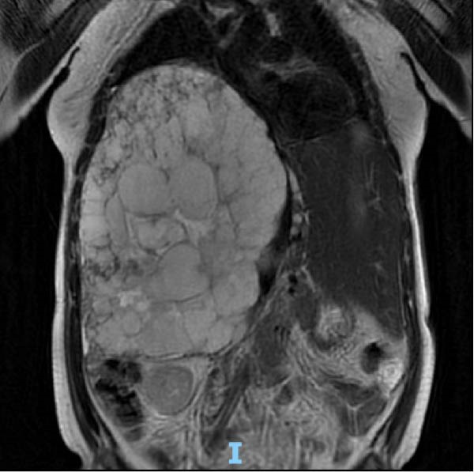

Ficha del catálogo
Hemangioma hepático
- Sistema
- Digestivo
- Modalidad
- RM
- Región
- Hígado
- Dificultad
- Básico
Es la lesión hepática benigna más frecuente y corresponde a una malformación vascular formada por espacios sanguíneos revestidos de endotelio. Suele descubrirse de forma incidental, es asintomática y no requiere tratamiento ni seguimiento cuando sus características de imagen son típicas. Solo las lesiones muy voluminosas pueden producir molestias por efecto de masa.
Técnica
El ultrasonido es la puerta de entrada habitual y muchas veces basta cuando la lesión es pequeña, homogénea e hiperecogénica en un hígado sano. La resonancia con contraste dinámico es el método que ofrece mayor seguridad diagnóstica, gracias a la combinación de la señal muy alta en T2 y del patrón característico de realce progresivo.
Qué observar
- Señal marcadamente alta en T2 que persiste en secuencias con tiempo de eco largo, con aspecto de bombilla
- Señal baja y homogénea en T1 con bordes bien definidos y a veces lobulados
- Realce nodular y globular periférico discontinuo en la fase arterial
- Relleno centrípeto progresivo en las fases portal y tardía, con densidad o señal similar a la de los vasos
- Ausencia de cápsula, de lavado y de invasión vascular
- En lesiones grandes, cicatriz o zona central fibrótica que no llega a rellenarse
Hallazgos
En ultrasonido la lesión típica es un nódulo hiperecogénico homogéneo, de bordes netos, con discreto refuerzo acústico posterior y sin halo. En tomografía y en resonancia dinámica el patrón distintivo es el realce en nódulos periféricos gruesos que siguen la atenuación o la señal de la aorta y de los vasos en cada fase, con progresión hacia el centro. Los hemangiomas pequeños pueden realzar de forma homogénea e inmediata, patrón de flujo rápido, y los gigantes suelen quedar con un centro fibroso o mixoide que no se rellena.
Perlas
La clave diagnóstica no es solo que la lesión realce, sino que su realce siga en todo momento el comportamiento de los vasos sanguíneos, con nódulos periféricos que igualan la densidad o la señal de la aorta y luego del sistema portal. En el hígado graso el hemangioma puede verse hipoecogénico respecto de un parénquima muy brillante, lo que confunde si no se tiene en cuenta el contexto.
Diagnóstico diferencial
- Metástasis hipervascular
- Realce en anillo continuo y fino con lavado posterior, señal en T2 menos intensa y contexto oncológico.
- Hepatocarcinoma
- Realce arterial global con lavado y cápsula, en un hígado con hepatopatía crónica.
- Quiste hepático simple
- Ausencia total de realce, señal muy alta en T2 con paredes imperceptibles.
- Hiperplasia nodular focal
- Realce arterial intenso y homogéneo con cicatriz central que realza de forma tardía.
- Absceso hepático
- Realce periférico con centro que restringe en difusión, en paciente febril y con cuadro clínico agudo.
Simuladores
- Área de infiltración grasa focal o de hígado respetado, que aparenta una lesión ecogénica
- Malformación vascular o cortocircuito arterioportal con realce arterial transitorio
- Metástasis de tumor neuroendocrino, que puede ser muy hipervascular
Por modalidad
- US
- Método inicial, suficiente para lesiones pequeñas y típicas en un hígado sin factores de riesgo
- RM
- Ofrece la mayor seguridad diagnóstica gracias a la señal alta y persistente en T2 unida al realce globular progresivo
- TC
- Muestra bien el patrón de relleno centrípeto pero requiere fases múltiples y expone a radiación
Protocolo
Resonancia con secuencias T2 de eco de espín rápido con tiempo de eco corto y largo, T1 en fase y fuera de fase, difusión y estudio dinámico tras gadolinio con fases arterial, portal y tardía de al menos 3 a 5 minutos, ya que el relleno completo puede requerir varios minutos. En tomografía se usa protocolo trifásico con fase arterial, portal y tardía.
Clasificación
Errores frecuentes
- Concluir el estudio dinámico demasiado pronto y no documentar el relleno tardío característico
- Interpretar como sospechosa una lesión hiperecogénica típica en un paciente sin factores de riesgo
- Confundir un hemangioma de flujo rápido con una metástasis hipervascular sin valorar la señal en T2

hemangioma higado lesion benigna realce globular resonancia relleno centripeto incidentaloma